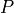
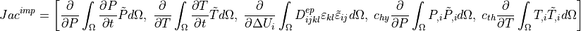

5.2. Application of Thermo- Hydro- Mechanical (THM) couplings in Numerical Geolab: Numerical implementation¶
In the previous tutorial we provided the theoretical preliminaries for the implementation of the residual
and jacobian terms needed for the weak form formulation in the notation Numerical Geolab employs. Here,
we are concerned with the implementation of the residual and jacobian terms into the python script defining the finite element formulation and the
the corresponding finite element problem. Before we present the modifications needed in the residual and the Jacobian terms let’s
consider the new unknowns that the THM couplings introduce to the model. These are the pressure  and temperature  fields.
These two extra unknowns will be appended in the unknown displacement vector that described the mechanical component of the problem.
fields.
These two extra unknowns will be appended in the unknown displacement vector that described the mechanical component of the problem.
The introduction of the energy and mass balance equations indicate that the variational form of the problem needs to be changed such that the time derivatives
of the auxiliary transient vector of the pressure and temperature increment fields are taken into account.
The introduction of the time derivative of the problem unknowns in our analyses requires the use of a transient variational formulation,
where part of the variational form for the THM coupled finite element problem is defined. The transient variational form implementation is described below:
def setVarFormTransient(self):
"""
Set Jacobian and Residual (Voigt form) default version for transient problems
"""
n=FacetNormal(self.mesh)
ds=Measure("ds", subdomain_data = self.boundaries)#,metadata=self.metadata )
Jac = (1./self.dt)*inner(as_vector(np.multiply(self.dotv_coeffs(),self.u)) , self.v)*dx(metadata=self.metadata)
Jac+= (1./self.dt)*self.dt*inner(dot(self.to_matrix(self.dsde2) , self.epsilon2(self.u)),self.epsilon2(self.v))*dx(metadata=self.metadata)
Res = -(1./self.dt)*inner(as_vector(np.multiply(self.dotv_coeffs(),self.Du)), self.v)*dx(metadata=self.metadata)
Res+= -(1./self.dt)*self.dt*inner(self.sigma2,self.epsilon2(self.v))*dx(metadata=self.metadata)
for NM in self.NMbcs:
Res+= (1./self.dt)*self.dt*dot(NM.ti,self.v)*ds(NM.region_id)
for NMn in self.NMnbcs:
Res+= (1./self.dt)*self.dt*NMn.p*dot(n,as_vector(np.take(self.v,NMn.indices)))*ds(NMn.region_id)
for RB in self.RBbcs:
Res+= (1./self.dt)*self.dt*dot(np.multiply(RB.ks,self.u),self.v)*ds(RB.region_id)
Jac+=self.feform.setVarFormAdditionalTerms_Jac(self.u,self.Du,self.v,self.svars2,self.metadata,self.dt,self.to_matrix(self.dsde2))
Res+=self.feform.setVarFormAdditionalTerms_Res(self.u,self.Du,self.v,self.svars2,self.metadata,self.dt)
return Jac, Res
In Numerical Geolab the Voigt notation in vector form for the stress and strain tensors is used. The generalized stress and strain vectors are then used to construct the incremental variational form (see here for more details on the construction of the variational form). In the case of a multiphysics analysis the material that is to be used contains also the diffusion terms of the pressure and temperature fields into the material matrix.
Making the connection with the previous tutorial, we can identify the following terms from the Residual formulation in order of appearance:
(5.2.1)¶![\begin{align*}
&Res=F_{ext}-F_{int} \\
&F_{int}=F^{imp}_{int}+\color{red}{F^{add}_{int}}\\
&F^{imp}_{int}=\left[+\int_{\Omega}\frac{\partial P}{\partial t}\tilde{P}d\Omega,\;
+\int_{\Omega}\frac{\partial T}{\partial t}\tilde{T}d\Omega,\;
+\int_{\Omega}\Delta \sigma_{ij}\tilde{\varepsilon}_{ij},\;
+c_{th}\int_{\Omega}T_{,i}\tilde{T}_{,i}d\Omega,\;
+c_{hy}\int_{\Omega}P_{,i}\tilde{P}_{,i}d\Omega \right],\\
&F_{ext}=\int_S \Delta t_i\tilde{u}_idS+\int_{S}q^{th}_i\tilde{T}dS+\int_{S}q^{hy}_i\tilde{P}dS
\end{align*}](_images/math/40982d98f5d0d7a35cd37e46fcbcf2a2227cc815.png)
where, is the already implemented components of the linear form of the internal power of the generalized forces together with the transient terms. The needs also to be applied.
We note that vector field of the displacements and the unknown pressure and temperature fields constitute a general vector field lying in a vectorspace of dimension equal to the number of unknowns.
In order to apply the linear form of the transient terms we take advantage of the above form of the vectorspace using the method ngeoFE.feproblem.UserFEobject.dotv_coeffs(), which is problem specific, and therefore,
it is defined in an exemplary problem script. The parts of the linear form that correspond to the divergence terms of the momentum, energy and mass balance
equations are given by the inner product of the generalised vector of stresses appended by the fluid and heat flows and the generalised vector of strains appended by the gradients of pressure and temperature.
The already implemented terms for the Jacobian formulation in order of appearance, are the following:
(5.2.2)¶
The highlighted lines in the above code block are calling the problem specific methods that will add the appropriate additional variational terms in the formulation of the residual and the jacobian respectively.
5.2.1. Numerical Implementation of the additional terms in the Finite Element formulation¶
For the Thermo- Hydro- Mechanical applications described in these series of tutorials the formulation of the Finite Element problem
needs to be appended in order for the additional degrees of freedom and the additional residual and jacobian terms to be taken into account.
We do so by sepcifying a child class of the ngeoFE.fedefinitions.FEformulation().
class THM3D_FEformulation(FEformulation):
'''
Defines a user FE formulation
'''
def __init__(self):
# Number of stress/deformation components
self.p_nstr=6+3+3
# Number of Gauss points
self.ns=1
# Number of auxiliary quantities at Gauss points
self.p_aux=2
Here, we defined the number of total strain components (), where
are the engineering shear strains. Then we appended thin number by the number of spatial pressure () and temperature derivatives ()
Since the values of pressure () and temperature () will be used inside the material routine in order to obtain the correct effective and total stresses ,
they also need to be provided at the Gauss points. We do so by defining two auxiliary Gauss point components, to be passed inside the material subroutine.
This is done explicitly by the following method:
def auxiliary_fields(self,v):
'''
Set user's generalized deformation vector
'''
auxgde=[
v[3],
v[4],
]
return as_vector(auxgde)
Next, we need to provide the generalized vector of total strains and spatial derivatives of pressure and temperature, to be used in the variational form.
def generalized_epsilon(self,v):
'''
Set user's generalized deformation vector
'''
gde=[
Dx(v[0],0), #gamma_11
Dx(v[1],1), #gamma_22
Dx(v[2],2), #gamma_22
Dx(v[1],2)+Dx(v[2],1), #gamma_23
Dx(v[0],2)+Dx(v[2],0), #gamma_13
Dx(v[0],1)+Dx(v[1],0), #gamma_12
Dx(v[3],0), #q_1 - pf
Dx(v[3],1), #q_2 - pf
Dx(v[3],2), #q_3 - pf
Dx(v[4],0), #q_1 - temp
Dx(v[4],1), #q_2 - temp
Dx(v[4],2), #q_3 - temp
]
return as_vector(gde)
As explained previously, we need to also take into account in the variational formulation the time derivatives of the incremental pressure and temperature fields.
Since we provide the incremental form of the system, the partial time derivative can be calculated in a finite difference approximation i.e.  This is done inside the transient variational formulation method by dividing the incremental values of the pressure and temperature fields with the time increment (dt). To do so, we need to provide a
mapping vector that maps the pressure and temperature components of the solution vector to be divided by the time increment. This is done with the following method:
This is done inside the transient variational formulation method by dividing the incremental values of the pressure and temperature fields with the time increment (dt). To do so, we need to provide a
mapping vector that maps the pressure and temperature components of the solution vector to be divided by the time increment. This is done with the following method:
def dotv_coeffs(self):
"""
Set left hand side derivative coefficients
"""
return as_vector([0.,0.,0.,1.,1.])
This vector is multiplied with the incremental solution vector, Du, so that only the pressure  and temperature incremental components of Du, survive do be divided by the time increment dt.
and temperature incremental components of Du, survive do be divided by the time increment dt.
5.2.1.1. Numerical implementation of the additional residual terms:¶
After we successfully defined the auxiliary pressure and temperature fields, the form of the generalized strain vector and the mapping to be used for the differentiation of the incremental pressure and temperature fields with respect to time, we apply the additional residual terms that are not already present in the transient variational formulation.
def setVarFormAdditionalTerms_Res(self,u,Du,v,svars,metadata,dt):
Res=0.
lstar=svars.sub(55-1)
bstar=svars.sub(56-1)
rhoC=svars.sub(57-1)
#HM terms
eps=self.generalized_epsilon(Du)
eps_v=eps[0]+eps[1]+eps[2]
virtual_pf=v[3]
Res+=-(1./bstar)*(1./dt)*dot(eps_v,virtual_pf)*dx(metadata=metadata)
#TM terms
virtual_Temp=v[4]
for i in range(1,6):
Res+= + (1./rhoC)*(1./dt)*svars.sub(1+i-1)*svars.sub(41+i-1)*virtual_Temp*dx(metadata=metadata)
#HT terms
DTemp=Du[4]
Res+= +(lstar/bstar)*(1./dt)*dot(DTemp,virtual_pf)*dx(metadata=metadata)
return Res
The additional residual terms correspond to the following terms of the generalized power of internal forces in order of appearance:
(5.2.4)¶
5.2.1.2. Numerical implementation of the additional jacobian terms:¶
We follow the same procedure for the additional terms to be added to the jacobian of the variational formulation.
def setVarFormAdditionalTerms_Jac(self,u,Du,v,svars,metadata,dt,ddsdde):
lstar=svars.sub(55-1)
bstar=svars.sub(56-1)
rhoC=svars.sub(57-1)
alfa=svars.sub(58-1)
Jac=0.
#HM terms
eps=self.generalized_epsilon(u) #needs u (trial function, because it takes derivatives in terms of u and not Du for calculating the Jacobian.
eps_vol=eps[0]+eps[1]+eps[2]
virtual_pf=v[3]
Jac+=+(1./dt)*(1./bstar)*dot(eps_vol,virtual_pf)*dx(metadata=metadata)
#MH terms
pf=u[3] #same as before
virtual_eps=self.generalized_epsilon(v)
virtual_eps_vol=virtual_eps[0]+virtual_eps[1]+virtual_eps[2]
Jac+=-(1./dt)*dt*dot(pf,virtual_eps_vol)*dx(metadata=metadata)
#HT terms
temperature = u[4]
Jac+=-(1./dt)*(lstar/bstar)*dot(temperature,virtual_pf)*dx(metadata=metadata)
#MT terms due to thermal expansion
eps_temp=alfa*temperature*as_vector([1.,1.,1.,0.,0.,0.,0.,0.,0.,0.,0.,0.])
Jac+=-(1./dt)*dt*inner(dot(ddsdde,eps_temp),virtual_eps)*dx(metadata=metadata)
#TM terms due to thermal dissipation
virtual_temp=v[4]
eps_plastic=[]
for i in range(0,self.p_nstr):
eps_plastic.append(svars.sub(41-1+i))
eps_plastic=as_vector(eps_plastic)
Jac+=-(1./dt)*(1./rhoC)*inner(dot(ddsdde,eps),eps_plastic)*virtual_temp*dx(metadata=metadata)
#TM terms due to thermal expansion
Jac+=-(1./dt)*(1./rhoC)*inner(dot(ddsdde,eps_temp),eps_plastic)*virtual_temp*dx(metadata=metadata)
return Jac
The additional jacobian terms tp be added are in order of appearance:
(5.2.4)¶![\begin{align*}
Jac^{add}=&\left[\frac{1}{\beta^\star}\frac{\partial}{\partial U_i}\int_\Omega\frac{\partial \varepsilon_v}{\partial t}\tilde{P}d\Omega,\;
-\frac{\partial}{\partial \Delta P}\int_{\Omega}\Delta P \delta_{ij}\tilde{\varepsilon}_{ij}d\Omega,\;
-\frac{\lambda^\star}{\beta^\star}\frac{\partial}{\partial T}\int_{\Omega}\frac{\partial T}{\partial t}\tilde{P}d\Omega,\;\right.\\
&-\frac{\partial}{\partial \Delta T}\int_{\Omega}\alpha \Delta T D^{ep}_{ijkl}\delta_{kl}\tilde{\varepsilon}_{ij}d\Omega,\;\\
&\left.
-\frac{1}{\rho C}\frac{\partial}{\partial U_i}\int_{\Omega}D^{ep}_{ijkl}\varepsilon_{kl}\dot{\varepsilon}^{\star,p}_{ij}\tilde{T}d\Omega,\;
-\frac{1}{\rho C}\frac{\partial}{\partial \Delta T}\int_{\Omega}\alpha\Delta TD^{ep}_{ijkl}\delta_{kl}\dot{\varepsilon}^{\star,p}_{ij}\tilde{T}d\Omega
% -\frac{1}{\rho C}\frac{\partial}{\partial U_i}\int_{\Omega}\int_{\Omega}D^{ep}_{ijkl}\varepsilon^\star_{kl}\dot{\varepsilon}^{\star,p}_{ij}\tilde{T}d\Omega
\right]
\end{align*}](_images/math/f7d7f406f5b1c03eb93f880d566b9fa9bd29d02f.png)